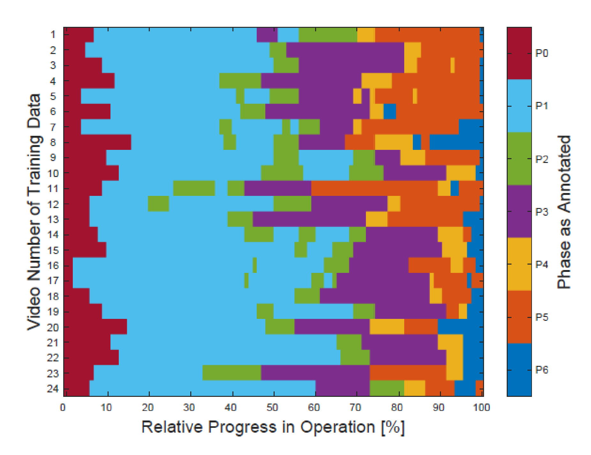
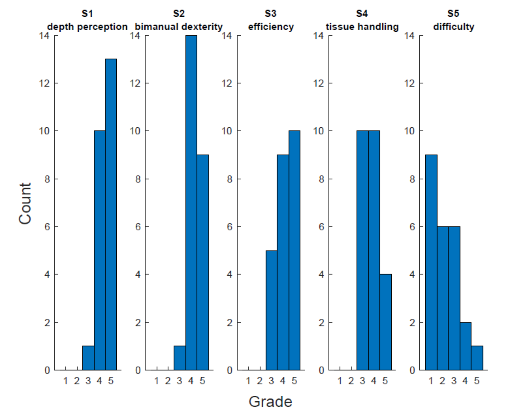
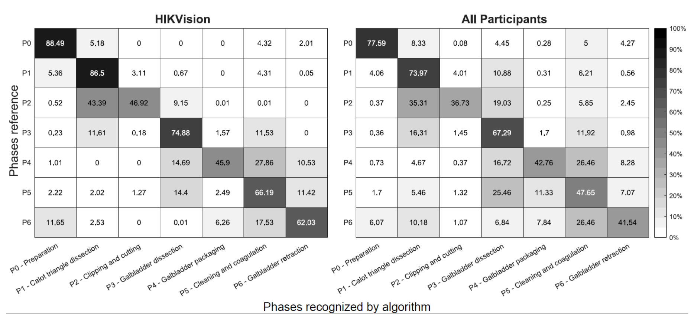
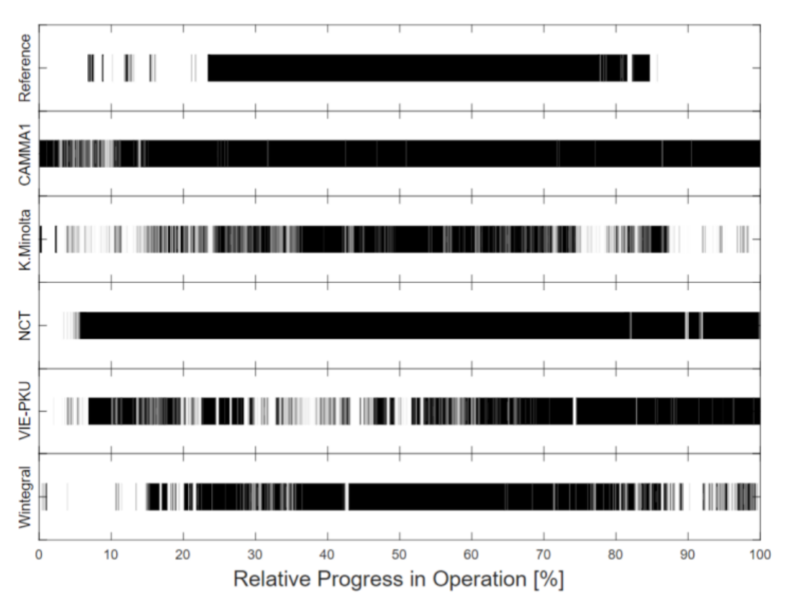
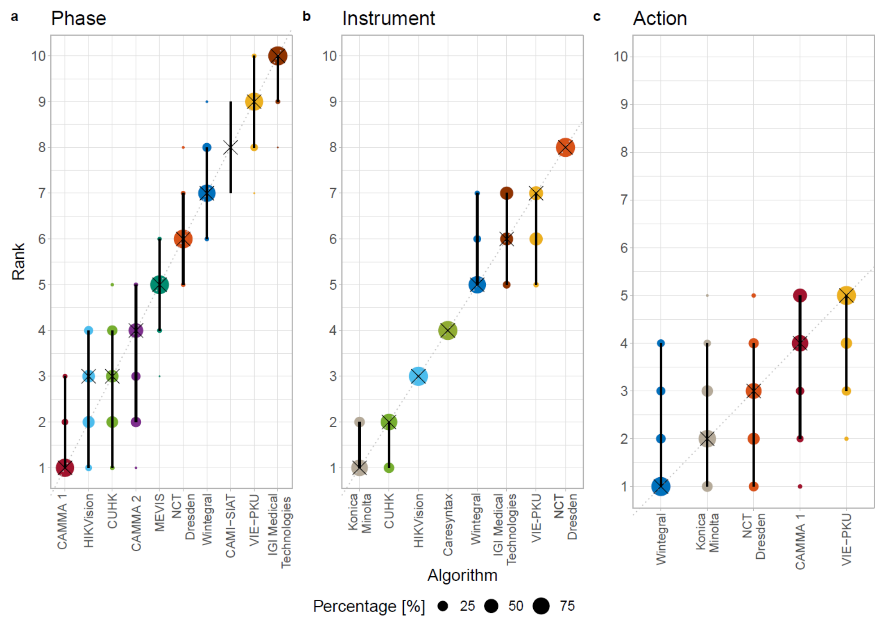
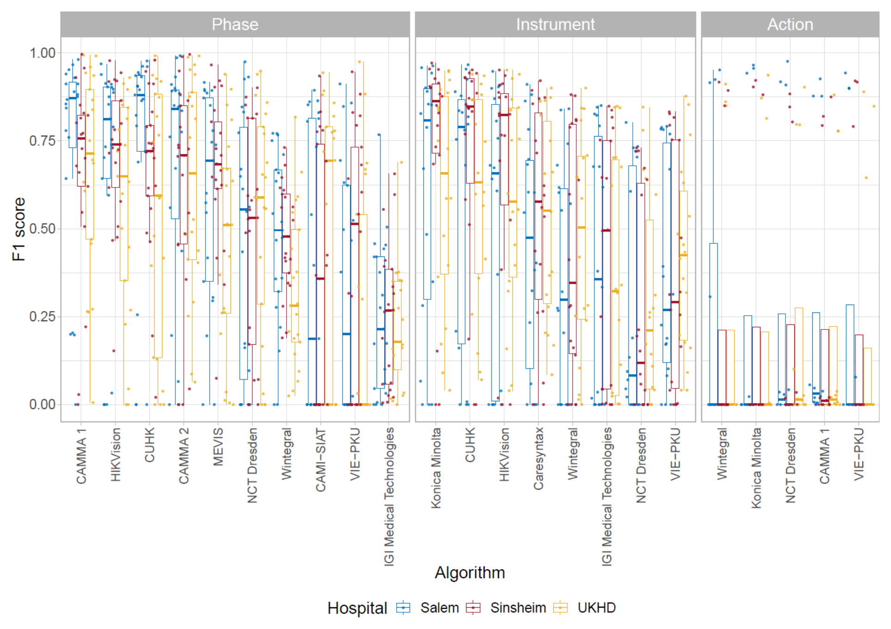

图文解读
1背景与动机
手术工作流分析要判断手术进行到哪一步、医生在做什么、用了什么器械；技能分析要判断手术做得好不好。论文认为两者是手术辅助系统和半自主手术机器人的前提。
问题在数据。 公开的 Cholec80 有 80 台单中心胆囊切除视频，阶段识别平均精度可达 91%，但只有阶段和器械标注。一个 1243 台的多中心数据集结果相近，却不公开。JIGSAWS 有动作和技能标注，但来自实验室模拟任务。
论文因此问两件事：单中心报告的阶段识别性能能否在多中心数据上由独立团队复现；比阶段更难的动作识别和技能评估能做到什么程度。
2核心观点速览
答案是不能复现，而且更难的任务基本没解决。 在 HeiChole 上，2019 年内镜视觉挑战赛参赛方法的阶段识别 F1 赛内最高 65.38%，器械检测最高 63.82%，动作识别最高 23.28%，技能评估唯一提交的平均绝对误差为 0.78。
F1 是精确率和召回率的调和平均；这里先在每个视频内对所有类别求 F1，再对视频平均。
四个关键做法：
- 三家德国医院采集 33 台手术，共 22 小时，测试集每个中心 3 台。
- 同一套视频上标注阶段、动作、器械、技能四类标签。
- 参赛者提交容器，测试集不公开，只允许在线推断。
- 用 1000 次 bootstrap 和成对
Wilcoxon检验评估排名是否可信。
边界： 测试集只有 9 个视频，技能任务只有 1 支队伍，摘要和正文有几处数字对不上。
3数据：多中心有多“多”
这一节回答：测试集能不能真正考到跨中心泛化。
| 中心 | 视频数 | 分辨率 | 帧率 |
|---|---|---|---|
| 海德堡大学医院 | 15 | 960×540 | 25 |
Salem 医院 | 15 | 1920×1080，3 台为 720×576 | 多数 50 |
Sinsheim 医院 | 3 | 1920×1080 | 多数 50 |
训练集只有海德堡和 Salem 各 12 台，Sinsheim 的 3 台全部在测试集。所以测试时有一个中心是模型完全没见过的，但它只有 3 个视频。
中心之间不只病人不同：分辨率、帧率、器械品牌都不同。海德堡病例更难，15 台里有 2 台评为最难的 5 级；另两家没有 5 级病例。

4标注：四类任务的粒度
阶段沿用 Cholec80 的七阶段定义，但不要求固定顺序。动作只有抓取、持握、剪切、夹闭四种，每帧一个四维二值向量。器械有 21 种，归为七类。技能用改良的腹腔镜技能整体操作评估量表，五个维度各打 1 到 5 分。
动作的时长极不平衡。 持握每台累计 974.2 秒，抓取、剪切、夹闭每台累计都在 10 秒以内。这一点直接决定了后面的动作识别结果。
技能评分只用到 3 到 5 分，1 分和 2 分从未出现。阶段由 3 名医学生、技能由 2 名医学生独立标注后协商一致；标注者间一致性论文未说明，动作和器械由几人标注论文也未说明。

5评测协议：怎么防止对测试集调参
参赛者提交 Docker 容器，输入一段视频，输出 CSV。测试集和参考标注从不公开，赛后新方法也只能提交给组织方运行。阶段、动作、器械只能用过去和当前帧，技能评估可以看完整视频。
排名先按逐视频平均 F1；技能按平均绝对误差。逐视频、逐类别平均让每类权重相同，代价是罕见类别的失败会被放大。
排名可信度用两种方法检查：对 9 个测试视频重采样 1000 次看排名变化，用 Kendall 相关系数衡量变化大小（1 为完全不变）；再用 Holm 校正的成对 Wilcoxon 检验看谁显著领先。
各队可以用外部公开数据，多支队伍用了 Cholec80 预训练；超参数和帧采样方式论文未说明。
6结果说了什么
| 排名 | 阶段 | F1（%） | 动作 | F1（%） | 器械 | F1（%） |
|---|---|---|---|---|---|---|
| 1 | CAMMA 1（赛后） | 68.78 | Wintegral | 23.28 | Konica Minolta | 63.82 |
| 2 | HIKVision | 65.38 | Konica Minolta | 22.83 | CUHK | 62.95 |
| 3 | CUHK | 64.98 | NCT Dresden | 22.62 | HIKVision | 58.20 |
| 末位 | IGI Medical Technologies | 23.93 | VIE-PKU | 21.75 | NCT Dresden | 27.45 |
阶段： 赛内冠军由 HIKVision 和 CUHK 并列获得。最难的是夹闭与切断（P2）：HIKVision 只判对 46.92%，有 43.39% 被判成前一阶段 P1。原因是剪刀、施夹器等标志性器械在相邻阶段也会出现。

HIKVision 与全部参赛者的阶段混淆矩阵（%），P2 与 P1、P4 与 P5 混淆最多。动作： 持握占手术时长 73.3%，参赛方法把 83.2% 的时间都判为持握。各方法持握的 F1 在 0.84 到 0.91，其余三类平均 F1 都低于 0.03，四类平均后就落在 23% 左右。所以动作排行榜几乎只反映持握识别的微小差别。

HeiChole-25 上各队的逐帧持握预测与参考标注，多数方法几乎全程预测持握。器械： 最好的 Konica Minolta 不用任何时序信息，只额外学习器械的共现。所有参赛者平均来看，标本袋被全程误检，剪刀被漏检。
技能： 唯一提交对每个视频都给出同样的分数，0.78 的误差主要来自参考评分本身集中在高分段。
7排名可信吗
阶段和器械排名的 Kendall 相关系数均值都是 0.93，动作只有 0.66。动作任务的五个方法之间没有任何显著差异。

但这里的稳定只针对这 9 个测试视频。 重采样不会引入新中心或新病例，它说明的是排名对测试视频扰动不敏感，不是对新医院的泛化。
8为什么是这些结果
论文给出的解释，以及我的判断：
| 现象 | 论文的解释 | 我的判断 |
|---|---|---|
| 阶段识别前三名都用卷积网络加循环网络 | 循环网络可记住所有历史帧 | 前三名在预训练和后处理上也不同，没有消融，只能算一致的迹象 |
| 阶段识别在海德堡最差 | 海德堡病例更难 | 海德堡的分辨率和帧率也不同，难度和画质没有分开 |
器械检测在未见过的 Sinsheim 上最好 | 与 Salem 器械品牌相同 | 合理，但只有 3 个视频 |
| 动作识别失败 | 训练集没有反映其他动作的变化 | 逐帧类平均 F1 同样会压平方法差异，论文没有尝试其他指标 |

9结果没说什么
- 91% 对 65% 不能直接归因于多中心。 指标不同（平均精度对 F1），训练集只有 24 台，阶段也不再有固定顺序。论文没有单中心与多中心训练的对照。
- 动作识别低分不等于短暂动作不可学。 论文没有按事件计的指标或按类召回。
- 技能评估没有形成可用基线。 只有 1 支队伍，且输出常数。
- 参考标注的噪声大小未知。 标注者间一致性论文未说明。
10复现与使用要注意什么
论文中有几处数字对不上，引用前要核对：
- 摘要阶段 F1 上限写 67.7%，排行榜最高 68.78%，赛内最高 65.38%。
- 摘要器械 F1 下限写 38.5%，排行榜最低是 27.45%。
- 正文 P0、P1 识别率 79.4% 和 82.8%，与图 6 两个混淆矩阵都对不上，口径论文未说明。
- 图 4 的图注与图例对医院颜色的描述不一致。
- 抓取和持握的“每台次数”与总数除以 33 台不符，分母论文未说明。
动作执行者（左手、右手、助手）做了标注却没有发布，原因论文未说明。
数据使用条件：训练集以非商业、相同方式共享的许可在 Synapse 发布，测试集只能通过提交容器评测。